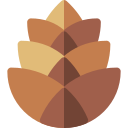

[...] ramos reprodutivos com folhas modificadas chamadas estróbilos. Nos pinheiros e nas sequoias, os estróbilos são bem desenvolvidos e conhecidos como cones.
Nas gimnospermas observa-se a ocorrência de sementes sem a presença de frutos envolvendo-as.
O maior grupo de gimnospermas. Como exemplo de conífera, temos os pinheiros e sequoias. Nesse filo, encontramos mais de 600 espécies distintas
Outra característica marcante é que nas cicadófitas temos plantas com folhas que lembram as palmeiras. Como exemplo de cicadófita, podemos citar as cicas.
Grupo que possui apenas uma espécie vivente que é o Ginkgo biloba. As folhas dessa planta assemelham-se a um leque.
As gimnospermas possuem raízes, caule e folhas. Possuem também [...]
Grupo que possui três filos. Nesses três gêneros, encontramos características que os aproximam das angiospermas, como os cones, que são bastante similares às inflorescências.
[...] Nas gimnospermas, observa-se a presença de grãos de pólen, que são os responsáveis por garantir que os gametas masculinos cheguem até o gameta feminino.
As gimnospermas (do grego Gymnos: 'nu'; e sperma: 'semente') são plantas terrestres que vivem, [...]
Principal característica ao reino Gminospermas
[...] preferencialmente, em ambientes de clima frio ou temperado. Nesse grupo incluem-se plantas como pinheiros, as sequoias e os ciprestes.
Na maioria dos seus representantes, não há a presença de gametas masculinos flagelados, que necessitam de água para a reprodução, com exceção das cicadófitas e Ginkgo. [...]